“People are hard on themselves.We are our own best critics. So how about a little positive reinforcement from time to time? Cinnabon is more than just an afternoon treat; it’s an exercise in ecstasy. An edible reminder that you deserve the best.A delicious way to say,“Thanks”.We are the warm hug you need after a hard day, the reward you deserve after putting your best foot forward.The perfect escape from the ordinary, from humpdays to birthdays. No matter what occasion, Cinnabon is the guaranteed way to sweeten any day and put a smile on your face.” Cinnabon
_
Cinnabon Colombia's service and packaging design consultancy project for its new "On The Go" concept. In charge and led by Mayck Cuellar, Luisa Donado, Audrey Hirelle and Camila Gutierrez.
The packaging was designed to seal the product from the outside, that allows the vapor to conserve the heat inside. It also allows the smell to be spelled when opening the packaging, because the smell always get lost with the traditional package.
To allow other products to take advantage of the design features, there will be the possibility of assembling the beverage packaging along with the food package, depending on what the customer requests.
It also includes a small saw, plasticised, so that the user can unwind the cinnamon roll and have the possibility to cut it using only one hand.
A part of the package will allow one or two hot drinks to be loaded, and a steam is used to heat the product. The system allows the drinks to be fixed to the center of the package, widening the opening in the center of the box, so that it can be transported in a safe manner and by gravity action will always remain in the same place. It also allows the person to take the cup, drink and then put it back in place, allowing consumption on the road.


 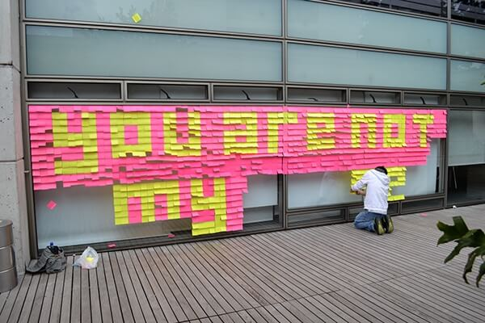
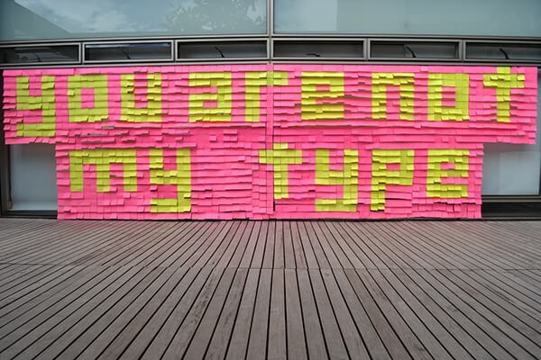
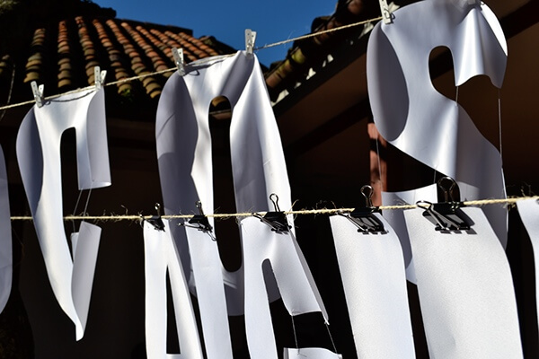
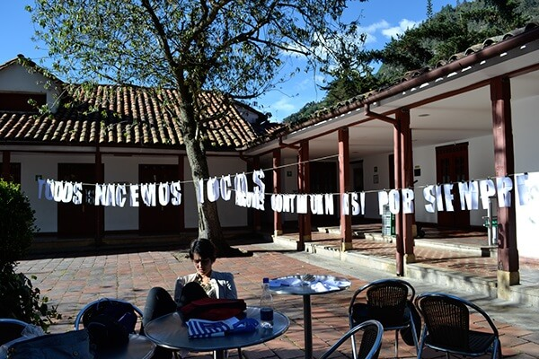
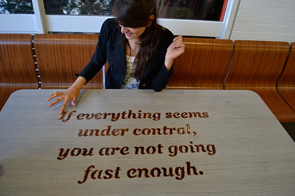
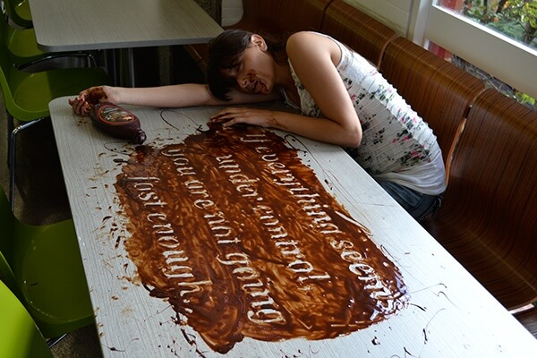
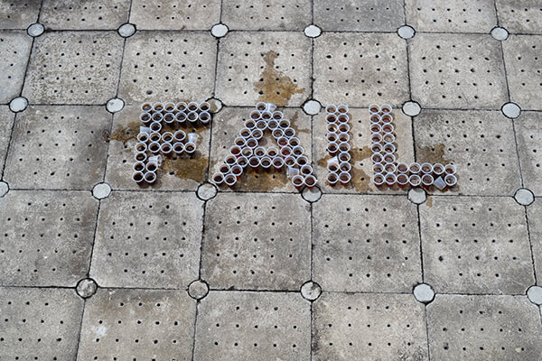
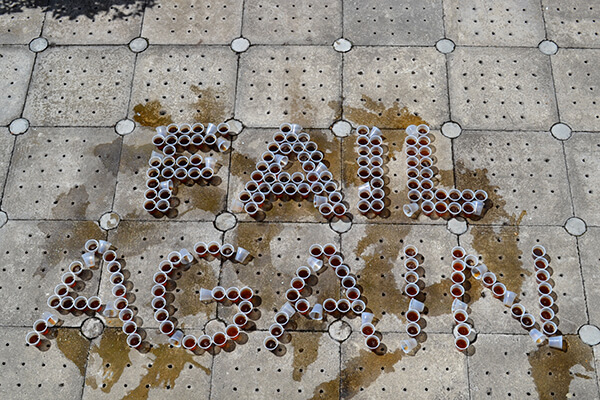
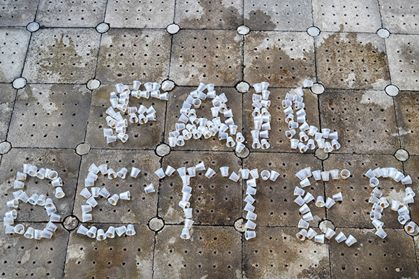
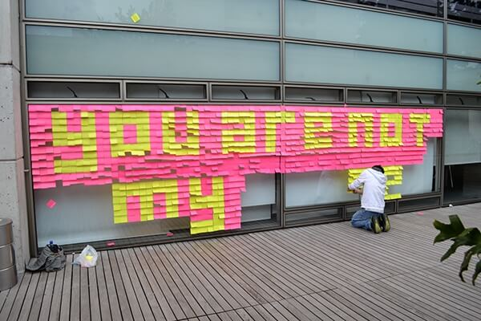
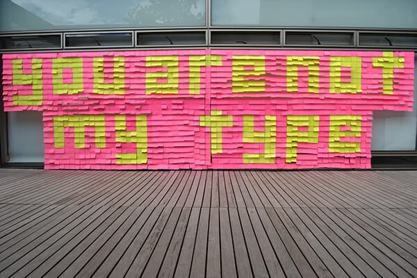
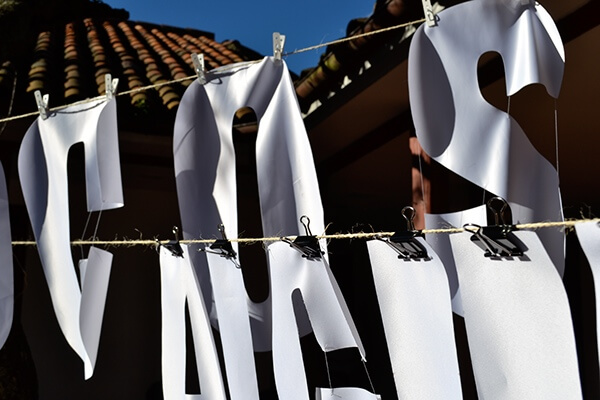
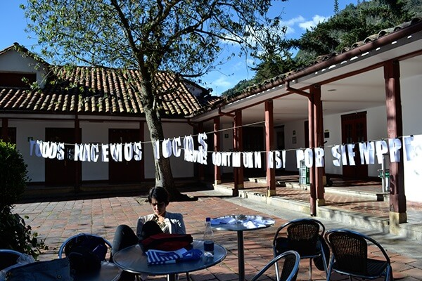
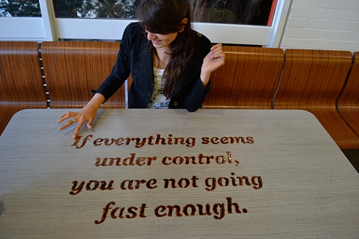
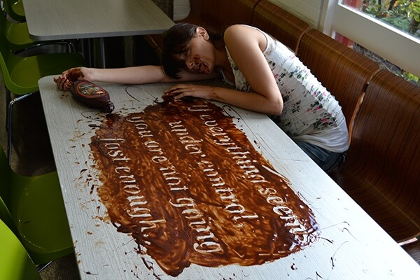
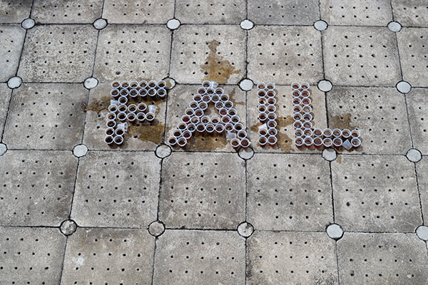
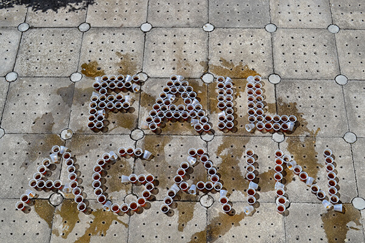
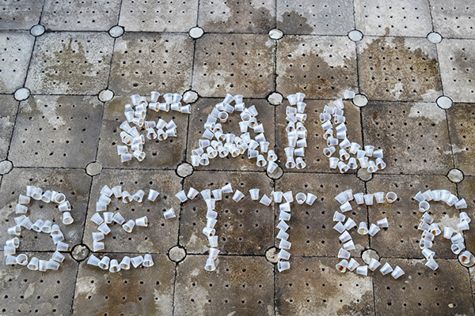


 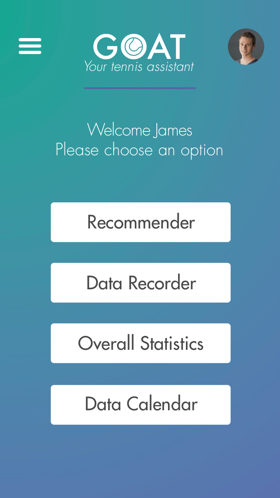
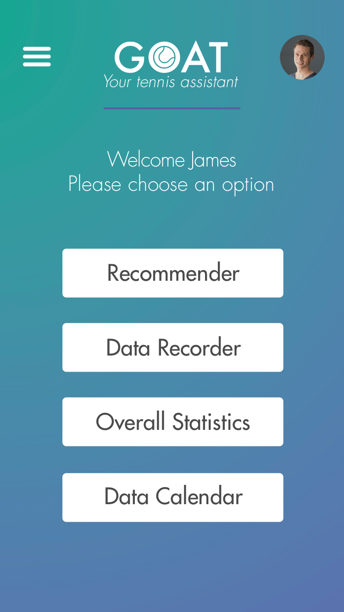